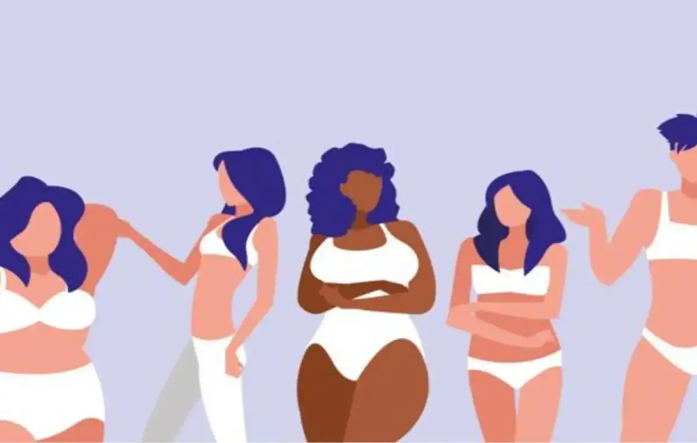

Temps de lecture : 2 minutes
L'IMPACT DES RÉSEAUX SOCIAUX
Au cours des dernières années, notre monde a subi de nombreuses transformations, pour le meilleur et parfois pour le pire. Nous avons traversé des crises économiques, sociétales, sanitaires ou encore climatiques.
L’anxiété ambiante
Le monde va mal, et les réseaux sociaux ne cessent de nous le rappeler. Nous sommes constamment exposés à la dernière actualité, au dernier fait-divers, et ce sont souvent les plus alarmants. Quelques bonnes nouvelles surgissent par-ci par-là, mais on ne peut pas dire que ce soit une majorité. Confronté à ce flux d’informations négatives, les jeunes peuvent se sentir impuissants, voir profondément anxieux.

Surplus de manichéisme
D’autre part, les réseaux sociaux poussent à la rigidification idéologique. Je pense en particulier à Twitter où tout le monde est divisé, convaincu par sa propre opinion. Même au sein des communautés qui s’y forment, tout est noir ou tout est blanc et on n’hésite pas à « cancel » quelqu’un s’il a un avis différent. Il y a un cruel manque d’écoute et de recul. Les échanges ressemblent davantage à des bagarres virtuelles ponctuées d’insultes qu’à de réels débats.

Le culte de la perfection
Un autre aspect, qui se retrouve plutôt sur des réseaux comme Instagram ou TikTok est celui de l’importance de l’image. Cela touche principalement les jeunes femmes, à cause des standards de beauté qui y sont encore davantage accentués. Sur ces réseaux, nous voyons défiler à longueur de journée des photos de physiques parfaits, de vies rêvées. La mise en scène constante nous fait croire que chacun a une vie encore plus épanouissante que l’autre, se trouve dans un endroit incroyable, a les plus beaux vêtements, une coiffure et un maquillage parfaits… Tout est pensé (et filtré, retouché) pour avoir l’air vrai et achevé sans efforts lorsque la réalité est souvent toute autre.

Cela nous ramène constamment à notre propre image, celle que l’on renvoie aux autres. Et une vie normale n’est absolument pas à la hauteur. Ce qui bien souvent influe sur notre confiance en soi car nous n'aurons jamais ce physique ou cette vie idéale, peu importe les efforts. Cela peut aussi avoir un fort impact sur notre santé mentale, à force de comparaison. Toutes ces photos qui font rêver finissent par ternir l’estime que nous avons pour nous même et pour notre vie. Finalement, ce n’est qu’un miroir déformé de la réalité, la vie d’autrui est totalement idéalisée au détriment de la nôtre.

Vers une évolution ?
Cela dit, des mouvements comme le body positive montrent peu à peu l’envers du décor de toutes ces photos parfaites d’influenceurs et de célébrités. Et dans cette lignée, nous sommes incités à aimer notre corps et par extension, la personne que l’on est. L’acceptation et l’appréciation de soi sont les clés pour une meilleur expérience sur Instagram, TikTok et même dans la vie réelle.
